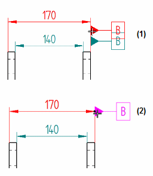

Feature Control Frame command
Feature Control Frame command
Placing feature control frames
The Feature Control Frame command defines and places a feature control frame on model elements.

-
Feature control frame alignment
You can use the Orientation list on the Feature Control Frame command bar to align the feature control frame to the surface, edge, or dimension that it references. Options are parallel or perpendicular, horizontal or vertical.
When the feature control frame is placed using a point in free space, only the horizontal and vertical options are available.
-
Break lines
Break lines can be horizontal, vertical, or inclined. You can use the Angle box on the command bar to specify an incline orientation for a break line.
-
Leader lines
You can drag any segment of a multi-segment leader line so that it snaps perpendicular to the previous or next segment. This does not apply to the break line.
Creating feature control frame content
Feature control frames refer to datums for communication of acceptable tolerances for a feature. The Feature Control Frame Properties dialog box specifies the content, format, and structure of the annotation.
There are four rows available on the General page, Feature Control Frame dialog box for creating a feature control frame. Individual Composite check boxes control whether a row is part of a composite feature control frame structure.

To learn how to use the dialog box to create content, see the following help topics:
Manipulating feature control frames
After you place a feature control frame, you can use the annotation edit handles to manipulate the annotation position, its leader line, and the break line.
You also can change the attachment point where the leader line is connected to the feature control frame. There are nine attachment points available. The attachment points are visible only when you press Alt while dragging the leader attachment point.
See the help topic, Manipulating feature control frames.
Aligning annotation terminators with dimension lines
You can drag the terminator of a datum frame or feature control frame (1), so that it snaps to the dimension line it references (2).

Saving feature control frames
You can save a feature control frame so that you can use it again quickly and efficiently. You can access the saved frame from the command bar.
How do I
Place a feature control frame or datum frameDefine feature control frame content
Example: Add symbols to a feature control frame
Save a feature control frame
Activate a saved feature control frame
Place a datum target
Learn more
Geometric tolerancingLook up more details
Manipulating feature control framesFeature Control Frame command bar
Feature Control Frame Properties dialog box
General tab (Feature Control Frame Properties dialog box)
Datum Frame command
Datum Frame command bar
Datum Frame Properties dialog box
General tab (Datum Frame Properties dialog box)
Datum Target command
Datum Target command bar
Datum Target Properties dialog box
General tab (Datum Target Properties dialog box)